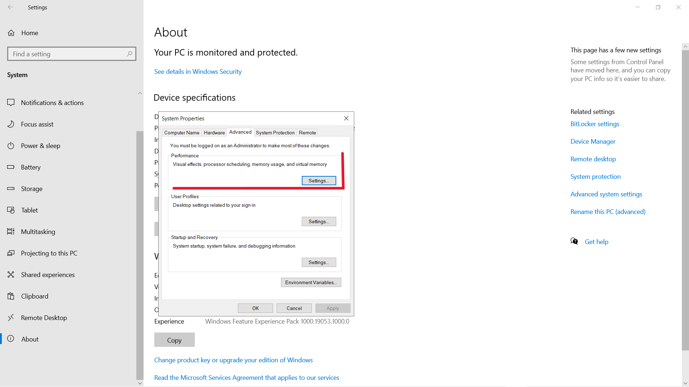
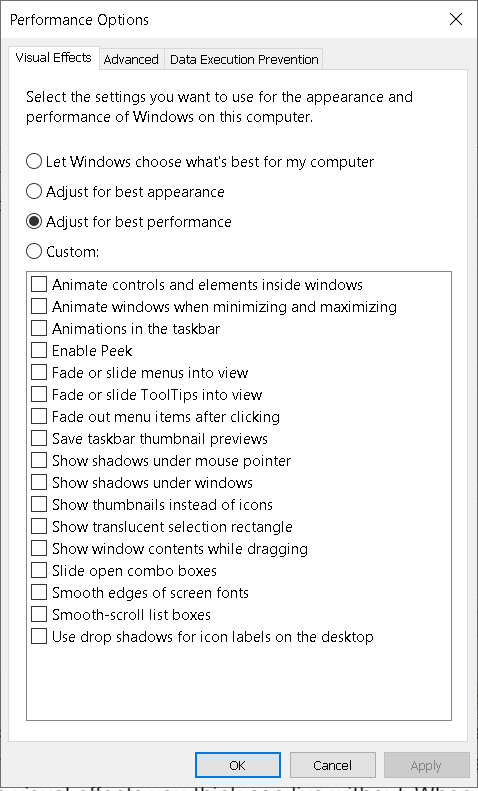

10 quick solutions to improve Windows 10 speed
Boost the speed of your computer without adding an SSD.
Making the Start menu, taskbar, and action center transparent is one thing, but Windows 10 still has a lot of other snazzy, built-in special effects. To really go bare-bones on the special effects, right-click the Start button and click System.
Click Advanced system settings to open the System Properties menu. On the Advanced tab under Performance, click Settings
This will open the Performance Options menu. In the Visual Effects tab, either choose Adjust for best performance to turn off all unnecessary animations and special effects, or choose Custom: and deselect the visual effects you think can live without. When you're finished, click OK to apply your changes.
The Performance Options menu will then open. Choose Custom: and remove the visual effects you believe you can live without, or click Adjust for best performance to turn off all superfluous animations and special effects under the Visual Effects tab. To make your changes effective after you're done, click OK.